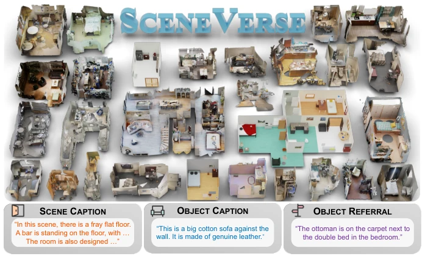
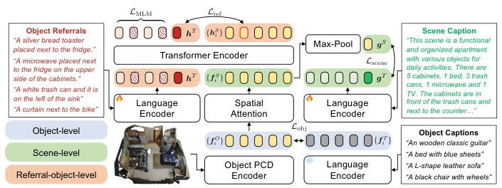
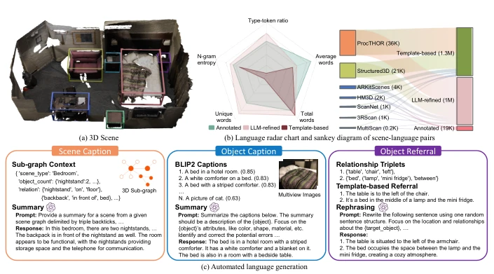

SceneVerse: Scaling 3D Vision-Language Learning for Grounded Scene Understanding
Baoxiong Jia, Yixin Chen, Huangyue Yu, Yan Wang, Xuesong Niu, Tengyu Liu abspdf
论文点评Review
这篇论文算是给 3D 视觉语言领域来了一剂“数据猛药”。作者搞了个 SceneVerse 数据集，号称百万级，68K 场景配 2.5M 文本对，试图用规模换性能。模型 GPS 搞了个多粒度对比学习，确实刷榜了 ScanRefer 等基准。但咱得实话实说，这数据里合成成分不少，真实世界的泛化能力还得打个问号。而且光有理解没动作，离真正的具身智能还有距离。不过，在 3D-VL 这么卷的当下，能拿出这么大规模的数据集，确实值得给个掌声，至少证明了 scaling law 在 3D 领域也管用。此外，自动生成的文本质量接近人工，但依赖 LLM 的稳定性。
This paper delivers a 'data powerhouse' to the 3D vision-language field. The authors constructed the SceneVerse dataset, claiming a million-level scale, with 68K scenes paired with 2.5M text pairs, attempting to trade scale for performance. The GPS model employs multi-granularity contrastive learning, indeed achieving SOTA results on benchmarks like ScanRefer. However, it must be admitted, there is a significant amount of synthetic data, and the generalization capability in the real world remains questionable. Moreover, having understanding without action is still far from true embodied intelligence. However, given the highly competitive environment in 3D-VL, presenting such a large-scale dataset is indeed worthy of applause, at least proving that the scaling law works in the 3D field. Additionally, the quality of automatically generated text is close to human-level, but it relies on the stability of LLMs.
研究动机Motivation
3D 视觉语言 grounding 是具身智能理解物理世界的关键，但相比 2D 领域，3D 数据稀缺且标注昂贵。现有数据集如 ScanRefer [16]、ReferIt3D [1] 规模太小，难以支撑大规模预训练。3D 场景物体配置复杂、关系 intricate，导致描述困难。缺乏统一学习框架，现有模型依赖特定任务设计。作者指出需要 scaling 3D-VL 学习来解决 grounded scene understanding 问题。特别是 3D 数据收集依赖扫描设备，成本高，且场景复杂度高，导致高质量配对数据不足。2D-VL 的成功很大程度上得益于数据量的爆发，而 3D 领域目前仍处于起步阶段，亟需类似的大规模数据集来推动发展。此外，现有方法多利用 2D 预训练模型迁移，难以捕捉 3D 特有的空间关系，限制了细粒度任务的性能。
3D vision-language grounding is key to embodied intelligence understanding the physical world, but compared to the 2D field, 3D data is scarce and annotation is expensive. Existing datasets such as ScanRefer [16], ReferIt3D [1] are too small in scale to support large-scale pre-training. 3D scene object configurations are complex, relationships are intricate, leading to difficulty in description. There is a lack of a unified learning framework; existing models rely on specific task designs. The authors point out the need for scaling 3D-VL learning to solve grounded scene understanding problems. Especially, 3D data collection relies on scanning equipment, has high costs, and scene complexity is high, leading to insufficient high-quality paired data. The success of 2D-VL largely benefits from the explosion of data volume, while the 3D field is currently in its infancy and urgently needs similar large-scale datasets to drive development. Additionally, existing methods mostly utilize 2D pre-trained model transfer, making it difficult to capture 3D-specific spatial relationships, limiting the performance of fine-grained tasks.

Fig. 1: Overview of SceneVerse. A million-scale 3D vision-language dataset that comprises over 68K various 3D indoor scenes and 2.5M aligned scene-language pairs in the form of scene caption, object caption, and object referral.
方法Method
整体流程分三步。数据上，整合 ScanNet [25] 等真实数据和 Structured3D [109] 等合成数据，统一预处理。语言标注分人工（96K referrals）和自动（Scene Graph + LLM）。模型 GPS 是 Transformer，分三层对齐：Object-level (物体特征 vs 文本), Scene-level (空间位置编码后的物体 vs 场景文本), Referral-object-level (指代关系 vs 物体)。损失函数包括对比损失和 MLM。具体地，Object-level 使用点云编码器和冻结语言模型进行跨模态对齐；Scene-level 引入空间注意力模块编码空间位置；Referral-object-level 使用自注意力 Transformer 学习文本描述与物体关系。最终优化总损失函数。此外，数据生成利用 3D 场景图和 LLM 生成场景描述、物体描述和指代表达，确保多样性。
The overall process is divided into three steps. In terms of data, it integrates real data like ScanNet [25] and synthetic data like Structured3D [109], with unified preprocessing. Language annotation is divided into human (96K referrals) and automatic (Scene Graph + LLM). The GPS model is a Transformer, divided into three layers of alignment: Object-level (object features vs. text), Scene-level (objects after spatial position encoding vs. scene text), Referral-object-level (referential relationships vs. objects). Loss functions include contrastive loss and MLM. Specifically, Object-level uses a point cloud encoder and frozen language model for cross-modal alignment; Scene-level introduces a spatial attention module to encode spatial positions; Referral-object-level uses a self-attention Transformer to learn text descriptions and object relationships. Finally, optimize the total loss function. Additionally, data generation utilizes 3D scene graphs and LLMs to generate scene descriptions, object descriptions, and referring expressions, ensuring diversity.

Fig. 3: Overview of GPS model. We use contrastive alignment at three levels Lobj, Lscene, and Lref and a masked language modeling objective LMLM for model learning.
Achieves SOTA on ScanRefer, Nr3D, Sr3D. Zero-shot performance is better than 3D-VisTA. Also brings improvement to semantic segmentation. Ablation shows data volume increase improves performance, LLM-generated data is close to human, synthetic data has domain gap. Specific metrics such as Acc@0.5 reach 47.1% on ScanRefer (pre-train). Data scale experiments show performance improves steadily with increasing data volume. Also achieves SOTA on ScanQA and SQA3D. Additionally, in zero-shot transfer experiments, the model demonstrated good generalization ability, proving the effectiveness of the dataset. Ablation experiments also show that removing any layer of alignment loss leads to performance degradation, verifying the necessity of the multi-granularity design.

Fig. 2: SceneVerse collection and statistics. Given a 3D scene (a), our automated pipeline (c) generates three types of description including scene caption, object caption and object referral. (b) SceneVerse data comparison and composition.